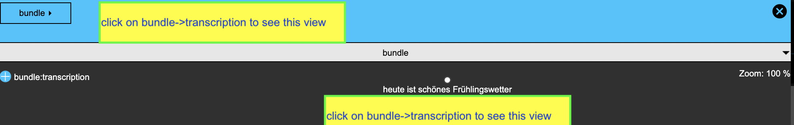
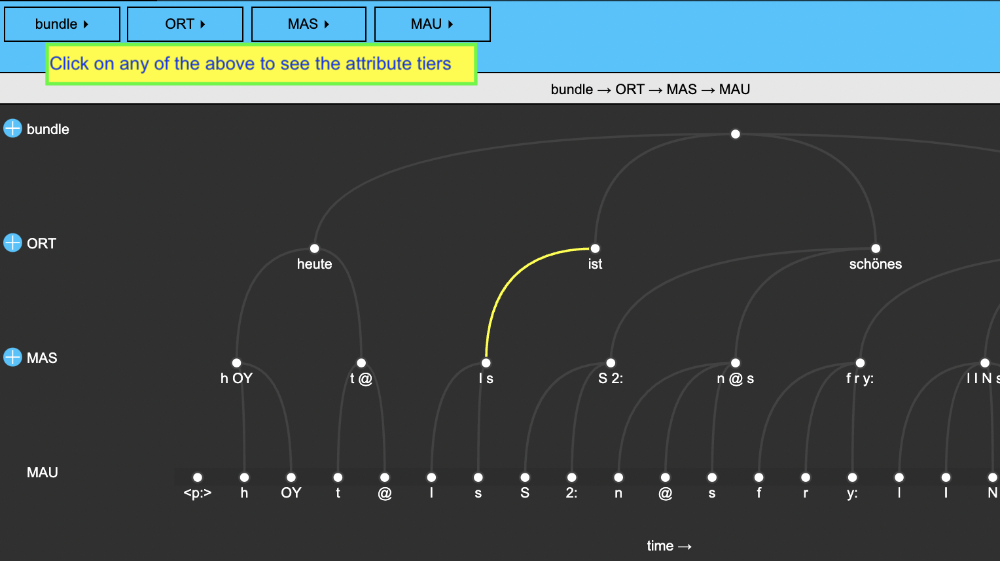
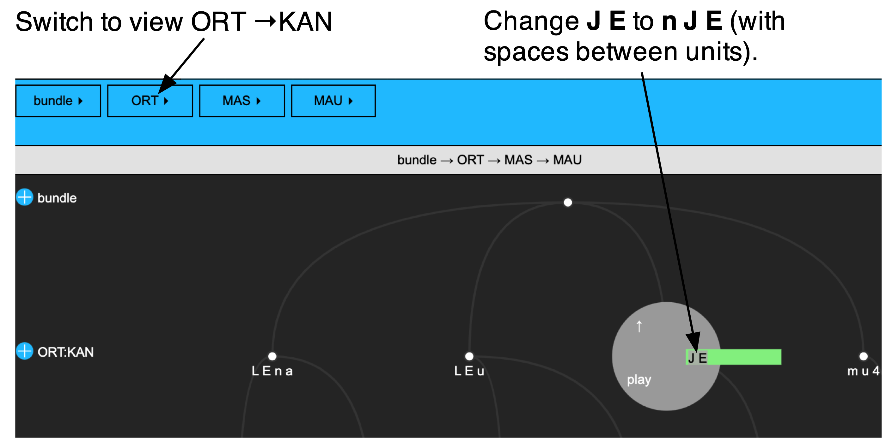

library(tidyverse)
library(emuR)
library(wrassp)5 Forced alignment in emuR
5.1 Objective and preliminaries
The objective of this chapter is to show how to go from a directory with .wav files that are orthographically transcribed in simple .txt files to a phonetically annotated and force-aligned Emu database.
The assumption is that you already have an R project called ipsR and that it contains the directories emu_databases and testsample. If this is not the case, please go back and follow the preliminaries chapter.
Start up R in the project you are using for this tutorial and load the usual packages:
In R, store the path to the directory testsample as sourceDir in the following way:
sourceDir <- "./testsample"And also store in R the path to emu_databases as targetDir:
targetDir <- "./emu_databases"5.2 Converting a text collection into an Emu database
The directory ./testsample/german on your computer contains .wav files and .txt files. Define the path to this directory in R and check that you can see these files with the list.files() function:
path.german <- file.path(sourceDir, "german")
list.files(path.german)[1] "K01BE001.txt" "K01BE001.wav" "K01BE002.txt" "K01BE002.wav"The above is an example of what we’ll call a text collection because it contains matching .wav and .txt files in the same directory, and each .wav file, the .txt file contains the corresponding orthography. We can see that this is true by using the function read_file() to read the content of these .txt files:
read_file(file.path(path.german, 'K01BE001.txt'))[1] "heute ist schönes Frühlingswetter"read_file(file.path(path.german, 'K01BE002.txt'))[1] "die Sonne lacht"The command convert_txtCollection() is used to convert a text collection into an Emu database. Below we make an Emu database called ger2, which we’ll store in targetDir:
convert_txtCollection(dbName = "ger2",
sourceDir = path.german,
targetDir = targetDir,
verbose=FALSE)You can now load the database into R with load_emuDB():
ger2_DB <- load_emuDB(file.path(targetDir, "ger2_emuDB"), verbose=FALSE)
summary(ger2_DB)── Summary of emuDB ────────────────────────────────────────────────────────────Name: ger2
UUID: 6fa81b59-fc09-4ba8-8792-9a87a6062ad8
Directory: C:\Users\rasmu\surfdrive\emuintro\emuintro\emu_databases\ger2_emuDB
Session count: 1
Bundle count: 2
Annotation item count: 2
Label count: 4
Link count: 0 ── Database configuration ──────────────────────────────────────────────────────── SSFF track definitions ──dataramme med 0 kolonner og 0 rækker── Level definitions ── name type nrOfAttrDefs attrDefNames
bundle ITEM 2 bundle; transcription;── Link definitions ──dataramme med 0 kolonner og 0 rækkerTry to serve() the database and have a look at it:
serve(ger2_DB, useViewer = F)If you switch to hierarchy view, you should see that the words in the .txt files are a single item in the attribute level of bundle with the name transcription, as shown in the image below:

If we query() the database to find all annotations at the transcription level, it’s clear that the words are all stored in this way. Note that we need to include the argument calcTimes = FALSE here, because the annotation level transcription is of type ITEM and has no time information.
query(ger2_DB, "transcription =~ .*", calcTimes = FALSE)5.3 Forced alignment
We are now going to run the Munich Automatic Segmentation (MAUS) pipeline over the database. We do this with the function runBASwebservice_all(), which combines a number of online processing tools. The obligatory arguments of this function are transcriptionAttributeDefinitionName() which will be the name of the newly created annotation level, and language, which in this case we set to deu-DE. We also set the argument runMINNI to FALSE; this is potentially used to forced-align data which has no annotations at all by first running the MINNI automatic speech recognition (ASR) routine. Note that runBASwebservice_all() can only be used if you have an active internet connection.
runBASwebservice_all(ger2_DB,
transcriptionAttributeDefinitionName = "transcription",
language = "deu-DE",
runMINNI = FALSE,
verbose = FALSE)
The
language setting in MAUS
There are quite a lot of languages available in MAUS. As of this writing, you can force-align Afrikaans, Albanian, Arabic, Basque, Catalan, Dutch, English, Estonian, Finnish, French, Georgian, German, Hungarian, Icelandic, Italian, Japanese, Luxembourgish, Maltese, Min Nan, Norwegian, Persian, Polish, Portuguese, Romanian, Russian, Spanish, Swedish, and Thai. There’s also a language independent mode which expects files to be phonetically transcribed in X-SAMPA, and a special mode for Australian aboriginal languages. Additionally, many of these languages have modes for multiple different dialects. More information can be found in the MAUS help files and in the MAUS web interface.
Let’s have a look at the database summary again:
summary(ger2_DB)── Summary of emuDB ────────────────────────────────────────────────────────────Name: ger2
UUID: 6fa81b59-fc09-4ba8-8792-9a87a6062ad8
Directory: C:\Users\rasmu\surfdrive\emuintro\emuintro\emu_databases\ger2_emuDB
Session count: 1
Bundle count: 2
Annotation item count: 58
Label count: 74
Link count: 52 ── Database configuration ──────────────────────────────────────────────────────── SSFF track definitions ──dataramme med 0 kolonner og 0 rækker── Level definitions ── name type nrOfAttrDefs attrDefNames
bundle ITEM 2 bundle; transcription;
ORT ITEM 3 ORT; KAN; KAS;
MAU SEGMENT 1 MAU;
MAS ITEM 1 MAS; ── Link definitions ── type superlevelName sublevelName
ONE_TO_MANY bundle ORT
ONE_TO_MANY ORT MAS
ONE_TO_MANY MAS MAU Note that multiple extra annotation levels and attributes have been created (ORT, KAN, KAS, MAU, and MAS), as well as links between them.
Let’s serve() the database.
serve(ger2_DB, useViewer = FALSE)We immediately see that phone-level annotations have been added in the MAU level. Have a look at the hierarchy view and try to identify the levels, links, and attributes.

This shows that the phone-level annotations are linked to syllable-level annotations in the MAS level and word-level orthographic annotations in the ORT level. The ORT level further has the attributes KAN and KAS. These contain canonical representations of the word, i.e. phonetic annotations corresponding to the canonical pronunciations of these words. The MAS level is chunked into syllables.
Given this complex information, more complex queries are now also possible. We can find the word-initial MAU segments of all polysyllabic words like this:
mau.s <- query(ger2_DB,
"[[MAU =~.* & Start(ORT, MAU)=1] ^ Num(ORT, MAS) > 1]")
#deselect the db_uuid column for readability
mau.s %>% select(-db_uuid)This data frame can then be passed to requery_hier() so we can see the labels in the ORT level associated with these words, like so:
requery_hier(ger2_DB, mau.s, "ORT") %>% select(-db_uuid)This may all seem rather opaque, but we’ll go into much more detail with how the querying language works in Chapter 7.
5.4 Forced alignment: Albanian
Next we’ll try out forced alignment for a different language (Albanian) and we will show how forced alignment can be done from a canonical phonemic transcription instead of from text.
5.4.1 From a text collection
First we’ll use a text collection like we saw for German previously. This text collection is in our sourceDir in a folder called albanian:
path.albanian <- file.path(sourceDir, "albanian")First we’ll convert the text collection into an Emu database using convert_txtCollection() as above.
convert_txtCollection(dbName = "alb",
sourceDir = path.albanian,
targetDir = targetDir,
verbose=FALSE)
alb_DB <- load_emuDB(file.path(targetDir, "alb_emuDB"), verbose = FALSE)
summary(alb_DB)── Summary of emuDB ────────────────────────────────────────────────────────────Name: alb
UUID: ad493e68-da1c-438f-b042-3e1ea02e814e
Directory: C:\Users\rasmu\surfdrive\emuintro\emuintro\emu_databases\alb_emuDB
Session count: 1
Bundle count: 4
Annotation item count: 4
Label count: 8
Link count: 0 ── Database configuration ──────────────────────────────────────────────────────── SSFF track definitions ──dataramme med 0 kolonner og 0 rækker── Level definitions ── name type nrOfAttrDefs attrDefNames
bundle ITEM 2 bundle; transcription;── Link definitions ──dataramme med 0 kolonner og 0 rækkerHave a look at the database, switch to hierarchy view, and verify that the words have been located at bundle -> transcription as for the German database above.
serve(alb_DB, useViewer = F)Now run MAUS, just as before. The language code for Albanian is sqi-AL. Note that this will take longer than for German, possibly a couple of minutes.
runBASwebservice_all(alb_DB,
transcriptionAttributeDefinitionName = "transcription",
language = "sqi-AL",
runMINNI = FALSE,
verbose = FALSE)
summary(alb_DB)── Summary of emuDB ────────────────────────────────────────────────────────────Name: alb
UUID: ad493e68-da1c-438f-b042-3e1ea02e814e
Directory: C:\Users\rasmu\surfdrive\emuintro\emuintro\emu_databases\alb_emuDB
Session count: 1
Bundle count: 4
Annotation item count: 138
Label count: 176
Link count: 125 ── Database configuration ──────────────────────────────────────────────────────── SSFF track definitions ──dataramme med 0 kolonner og 0 rækker── Level definitions ── name type nrOfAttrDefs attrDefNames
bundle ITEM 2 bundle; transcription;
ORT ITEM 3 ORT; KAN; KAS;
MAU SEGMENT 1 MAU;
MAS ITEM 1 MAS; ── Link definitions ── type superlevelName sublevelName
ONE_TO_MANY bundle ORT
ONE_TO_MANY ORT MAS
ONE_TO_MANY MAS MAU Look at the database and verify that the same kind of information has been automatically derived, as for the German database earlier.
serve(alb_DB, useViewer = FALSE)5.4.2 From a canonical representation
MAUS also allows to segment sound files based on the canonical level that we saw in the KAN attribute above. This can be useful when the canonical representation provided by MAUS deviates considerably from what was actually said. For one of the words in 0001BF_1syll_1, the canonical representation is J E but what was actually said is closer to n J E.
To see how this works, switch the hierarchy view in the webApp from ORT → KAN and then change the node J E of the ORT:KAN level to n J E for file 0001BF_1syll_1, as in ?fig-albhier. Remember to save the annotation after editing.

We can now run MAUSdirectly on this canonical level using the runBASwebservice_maus() function. Here we again pass the language, and we pass the name of the existing annotation level with a canonical representation KAN to the argument canoAttributeDefinitionName. We also specify the newly created force-aligned level mausAttributeDefinitionName, which we call MAU2 in order to differentiate it MAU level that we already created.
runBASwebservice_maus(alb_DB,
canoAttributeDefinitionName = "KAN",
mausAttributeDefinitionName = "MAU2",
language = "sqi-AL",
verbose = FALSE)Inspect the database again. There should now be a new annotation level called MAU2.
summary(alb_DB)── Summary of emuDB ────────────────────────────────────────────────────────────Name: alb
UUID: ad493e68-da1c-438f-b042-3e1ea02e814e
Directory: C:\Users\rasmu\surfdrive\emuintro\emuintro\emu_databases\alb_emuDB
Session count: 1
Bundle count: 4
Annotation item count: 219
Label count: 257
Link count: 197 ── Database configuration ──────────────────────────────────────────────────────── SSFF track definitions ──dataramme med 0 kolonner og 0 rækker── Level definitions ── name type nrOfAttrDefs attrDefNames
bundle ITEM 2 bundle; transcription;
ORT ITEM 3 ORT; KAN; KAS;
MAU SEGMENT 1 MAU;
MAS ITEM 1 MAS;
MAU2 SEGMENT 1 MAU2; ── Link definitions ── type superlevelName sublevelName
ONE_TO_MANY bundle ORT
ONE_TO_MANY ORT MAS
ONE_TO_MANY MAS MAU
ONE_TO_MANY ORT MAU2 If you have reason to suspect that the canonical representation will differ from what is actually said in the recording, you can use the function runBASwebservice_g2pForPronunciation() as the first step. This will only generate the canonical reprsentations without doing forced alignment, and this can then be corrected before running the MAUS forced alignment routine. If you have much more data, this may speed up your process.
5.5 Functions introduced in this chapter
read_file(): reads the content of a.txtfile into Rconvert_txtCollection(): converts pairs of.wavand.txtfiles into an Emu database.run_BASwebservice_all(): performs all the steps needed to get from an Emu database with orthographical transcription that aren’t time-aligned to a multi-level force-aligned phonetic annotationrun_BASwebservice_maus(): performs forced alignment on an Emu database which already has (non-time-aligned) canonical phonetic annotationsrun_BASwebservice_g2pForPronunciation(): performs grapheme-to-phoneme (G2P) conversion of an orthographical transcription to a canonical phonetic transcription on an Emu database